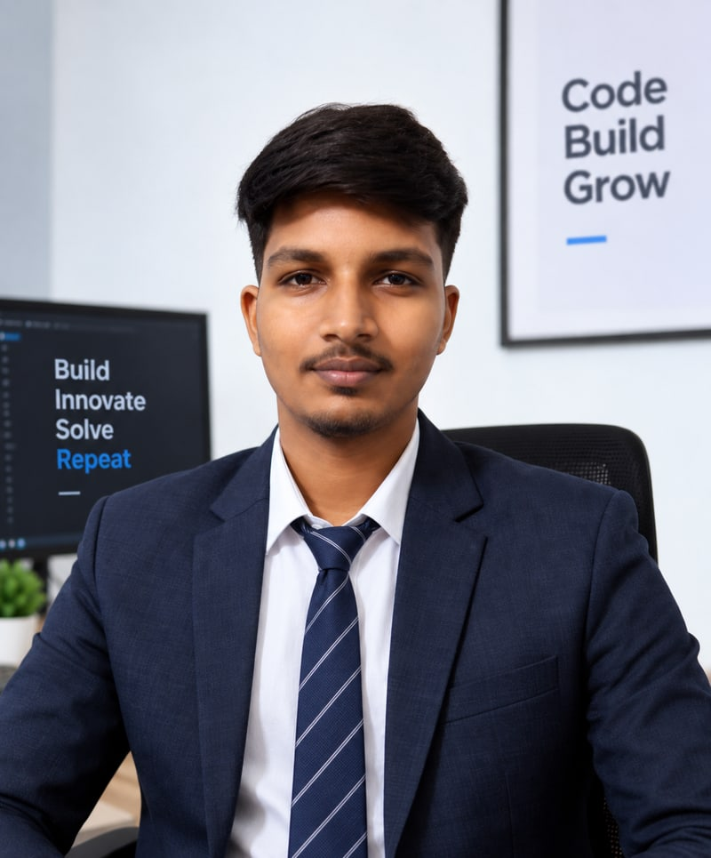

SOURAV CHOWDHURY
Full Stack Developer (Next.js · Node.js · PostgreSQL)
About Me
Full Stack Developer at Oneisok Digital Solution and a Computer Science & Engineering
graduate (2026), building web applications from backend to frontend across APIs, databases,
third-party integrations, and deployment. Currently engineering Voteniti, an election management
platform modelling the Indian election hierarchy down to individual booths, with area-scoped RBAC
and an on-demand data layer that keeps hundreds of thousands of records queryable on a small
database tier.
Experience
Full Stack Developer | Oneisok Digital Solution, Kolkata (Onsite) | May 2026 – Present
- Engineer Voteniti, a full-stack Election Management System running MP, MLA, Municipal, and Panchayat election operations across India, modelling 543 Lok Sabha constituencies down to individual booths from ECI and LGD government datasets
- Designed an on-demand data layer serving ~255k Gram Panchayats and ~97k urban Wards from bundled NDJSON, materializing rows into PostgreSQL only on first use to stay within a 500 MB tier
- Built enterprise RBAC with area- and election-scoped roles, recursive server-side subtree guards, and smart-delete approval workflows; cut hierarchy load from minutes to seconds with bulk materialization, across 85+ SQL migrations
- Rebuilt oneisok.co on Next.js 14 with a role-based admin panel and MongoDB Atlas persistence, so staff publish content without a deploy
Full Stack Developer Intern | Euphoria GenX | Aug 2025 – Feb 2026
- Completed a structured Skill Development & Internship Program focused on full-stack web development
- Built Foodooza, a real-time food delivery web application, with end-to-end frontend and backend functionality
- Implemented real-time features, authentication flows, and responsive UI components across the stack
- Gained hands-on experience in application architecture, debugging, and deployment workflows
Web Developer Intern | Pinnacle Labs Pvt. Ltd. | Oct 2024 – Nov 2024
- Built responsive UI components using JavaScript and React
- Integrated REST APIs for smooth client-server communication
- Fixed bugs and improved application performance and reliability
- Used Git and followed structured SDLC practices
Technical Skills
- Languages: TypeScript, JavaScript (ES6+), Java, C, SQL
- Frontend: React.js, Next.js (App Router), Three.js, React Native, Tailwind CSS, TanStack Query, HTML5, CSS3, SEO
- Backend & APIs: Node.js, Express.js, Nest.js, REST APIs, RBAC & Authorization, JWT, Zod validation
- Databases: PostgreSQL, Supabase, MongoDB, Firestore, SQL migrations, schema design, query optimization
- Cloud & Infrastructure: AWS, Cloudflare R2, Vercel, Render, Firebase, object storage, deployment & hosting
- Tools: Git, GitHub, Postman, VS Code, Vite, Expo
- AI Tools: Claude, ChatGPT, Gemini, GitHub Copilot, OpenAI API, prompt engineering
Projects
Voteniti – Election Management System | Full Stack Developer, Oneisok Digital Solution
Next.js 16, React 19, TypeScript, Node.js, Express, PostgreSQL, TanStack Query, Zod, JWT
- Production platform running MP, MLA, Municipal, and Panchayat election operations across India
- Hierarchy-driven architecture where the org chart is the team: scoped president roles manage only their own subtree, enforced server-side
- Live: https://voteniti.in
Oneisok – Company Website & Admin Panel | Full Stack Developer, Oneisok Digital Solution
Next.js 14, TypeScript, Tailwind CSS, MongoDB Atlas, Firebase Auth
- Rebuilt the company website with a built-in role-based admin panel for Super Admin, HR, and office staff
- Added a self-service influencer portal and migrated production data from Firestore to MongoDB Atlas
- Live: https://www.oneisok.co
Education
Bachelor of Technology, Computer Science & Engineering (MAKAUT)
Greater Kolkata College of Engineering & Management (2022 – 2026) | CGPA: 7.75
Higher Secondary (WBCHSE)
Shyamnagar Sri Ramkrishna Vidyamandir (2019 – 2021) | Percentage: 83
Secondary (WBBSE)
Shyamnagar Sri Ramkrishna Vidyamandir (2018 – 2019) | Percentage: 70.14
Certifications
- AWS Academy Data Engineering | AWS Academy
- Full-Stack (MERN) Training & Internship | Euphoria GenX
- AI-ML Virtual Internship | EduSkills
- Appreciation of Digital Literacy | Capgemini